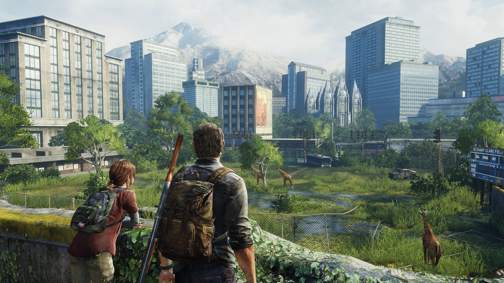
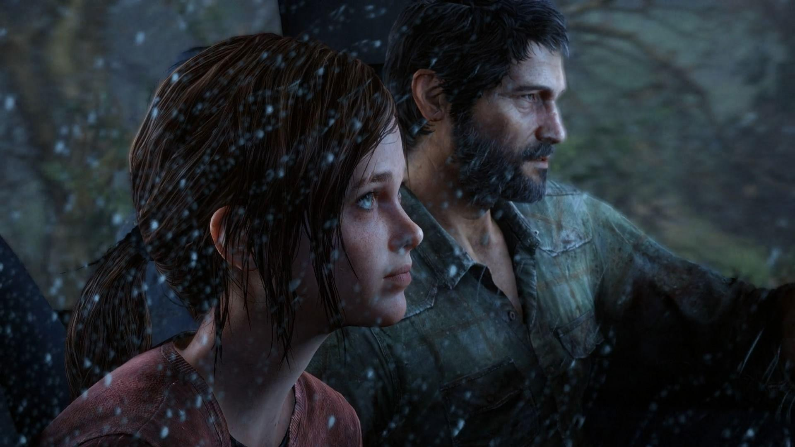
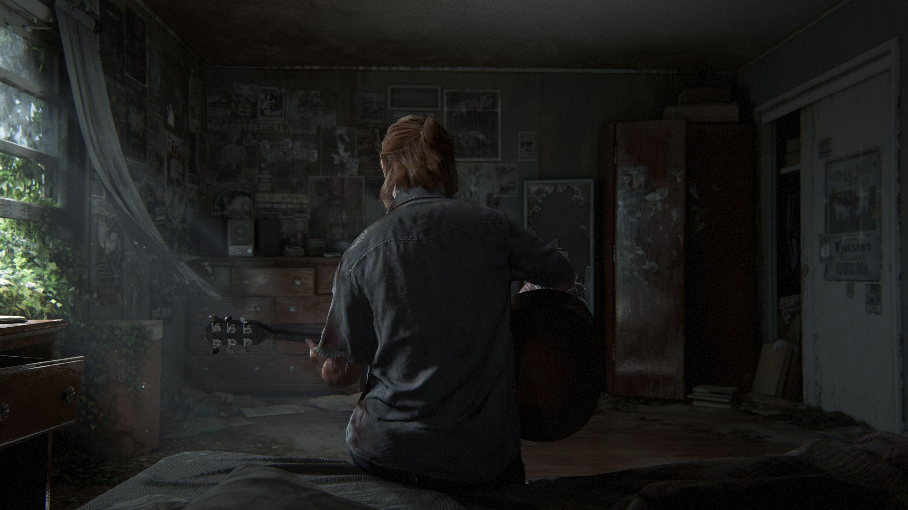

چرا The Last of Us هنوز یکی از تأثیرگذارترین بازیهای تاریخ است؟
بعضی از بازیها را برای سرگرمی تجربه میکنیم و پس از پایان آخرین مرحله، بهتدریج آنها را فراموش میکنیم؛ اما برخی آثار از مرز سرگرمی عبور میکنند، در ذهن ما ریشه میدوانند و تا مدتها پس از خاموش شدن کنسول نیز همراهمان باقی میمانند. The Last of Us بدون تردید یکی از همین آثار است؛ بازیای که برای بسیاری از گیمرها فقط یک عنوان اکشن و بقا نیست، بلکه تجربهای عمیق، تلخ و بهشدت انسانی محسوب میشود.
The Last of Us نقطهضعف بسیاری از گیمرهاست؛ نه فقط به دلیل جهان ویرانشده، مبارزات نفسگیر یا کیفیت بالای ساخت، بلکه به این دلیل که میداند چگونه احساسات مخاطب را هدف قرار دهد. این بازی بازیکن را وارد سفری میکند که در آن عشق، ترس، فقدان، امید، خشونت و انتخابهای اخلاقی به شکلی جداییناپذیر در کنار یکدیگر قرار گرفتهاند.
مهمترین ویژگی بازی آن است که از احساسات مخاطب سوءاستفاده نمیکند و برای تأثیرگذاری، صرفاً به نمایش صحنههای غمانگیز متکی نیست. احساسات موجود در داستان بهتدریج و از طریق رفتار شخصیتها، گفتوگوهای کوتاه، سکوتهای سنگین، محیطهای متروکه و اتفاقات مسیر شکل میگیرند. به همین دلیل، ارتباط بازیکن با جهان بازی طبیعی، عمیق و باورپذیر به نظر میرسد.
فراتر از یک بازی اکشن و بقا
اگر The Last of Us را فقط یک بازی اکشن و بقا بدانیم، بخش بزرگی از هویت آن را نادیده گرفتهایم. مبارزه با آلودهها، جستوجوی منابع و تلاش برای زنده ماندن اجزای مهمی از تجربه هستند، اما قلب واقعی بازی در روابط انسانی و پیامدهای تصمیمهایی قرار دارد که شخصیتها در شرایط دشوار میگیرند.
جهان بازی دیگر به قواعد آشنای زندگی عادی پایبند نیست. امنیت از بین رفته، اعتماد به کالایی کمیاب تبدیل شده و هر تصمیم ممکن است سرنوشت یک انسان را تغییر دهد. در چنین جهانی، بازی دائماً از بازیکن میپرسد که انسان برای زنده ماندن تا کجا حاضر است پیش برود و آیا بقا همیشه ارزش پرداخت هر هزینهای را دارد؟
همین پرسشها هستند که The Last of Us را از بسیاری از آثار آخرالزمانی متمایز میکنند. بازی پاسخ قطعی و سادهای ارائه نمیدهد. در عوض، شخصیتها را در موقعیتهایی قرار میدهد که مرز میان انتخاب درست و اشتباه در آنها مبهم است. مخاطب نیز ناچار میشود پیشفرضهای اخلاقی خودش را دوباره بررسی کند.

جوئل و الی؛ قلب تپنده داستان
بدون رابطه میان جوئل و الی، The Last of Us هرگز به اثری با این میزان از ماندگاری تبدیل نمیشد. این دو شخصیت در ابتدای مسیر، یکدیگر را نه بهعنوان اعضای یک خانواده، بلکه بهعنوان بخشی از یک مأموریت میبینند. رابطه آنها سرد، محتاطانه و متأثر از دنیایی است که اعتماد کردن در آن میتواند مرگبار باشد.
با پیشروی داستان، فاصله میان آنها بهآرامی کاهش پیدا میکند. این تحول ناگهانی یا تصنعی نیست. بازیکن آن را در دل سفر، گفتوگوهای روزمره، محافظت کردن از یکدیگر و عبور از موقعیتهای خطرناک مشاهده میکند. همین روند تدریجی باعث میشود رابطه آنها واقعی و تأثیرگذار احساس شود.
جوئل شخصیتی کامل و بینقص نیست. او انسانی آسیبدیده است که گذشتهای سنگین را با خود حمل میکند و برای زنده ماندن، تصمیمهایی گرفته که نمیتوان همه آنها را بهسادگی توجیه کرد. بااینحال، همین نقصها او را به شخصیتی انسانی تبدیل میکنند؛ شخصیتی که مخاطب ممکن است با تمام انتخابهایش موافق نباشد، اما میتواند درد، ترس و انگیزههایش را درک کند.
الی نیز فقط شخصیتی نیست که باید از او محافظت شود. او اراده، شجاعت، کنجکاوی و شخصیت مستقل خودش را دارد. الی در طول سفر تنها همراه جوئل نیست، بلکه یکی از مهمترین نیروهای پیشبرنده داستان است. حضور او به جهان تاریک بازی گرما، شوخطبعی و امید میبخشد؛ امیدی که البته همیشه شکننده باقی میماند.
آنچه رابطه این دو را ماندگار میکند، صداقت احساسی آن است. بازی تلاش نمیکند شخصیتهایش را قهرمانانی بینقص نشان دهد. آنها اشتباه میکنند، میترسند، خشمگین میشوند و گاهی تصمیمهایی میگیرند که مخاطب را با احساسات متناقض روبهرو میکند. همین تناقضها رابطه جوئل و الی را باورپذیر ساختهاند.
The Last of Us درباره نجات دادن تمام جهان نیست؛ درباره انسانهایی است که در میان ویرانههای جهان، تلاش میکنند دلیلی شخصی برای ادامه دادن پیدا کنند.
داستانی که فقط در میانپردهها روایت نمیشود
یکی از بزرگترین دستاوردهای The Last of Us، پیوند طبیعی میان داستان و گیمپلی است. روایت بازی فقط در کاتسینها و گفتوگوهای مستقیم جریان ندارد؛ بلکه محیط، نحوه حرکت شخصیتها، منابع محدود و حتی سکوتهای میان مسیر نیز بخشی از داستان را منتقل میکنند.
خانههای متروکه، وسایل باقیمانده، یادداشتها و نشانههای زندگی گذشته به بازیکن یادآوری میکنند که این محیطها زمانی محل زندگی انسانهای واقعی بودهاند. بازی بدون توضیحات طولانی نشان میدهد که فروپاشی جهان فقط یک رویداد بزرگ تاریخی نبوده، بلکه مجموعهای از هزاران تراژدی کوچک و شخصی است.
این نوع داستانگویی محیطی باعث میشود بازیکن خودش بخشی از روایت را کشف کند. هر اتاق متروکه ممکن است داستانی ناگفته داشته باشد و هر نشانه کوچک میتواند تصویری از زندگی انسانهایی ارائه کند که پیش از رسیدن شخصیتهای اصلی در آن مکان حضور داشتهاند.
گفتوگوهای میان جوئل و الی نیز اغلب هنگام حرکت و جستوجو اتفاق میافتند. این مکالمات شاید در ظاهر ساده باشند، اما به شناخت شخصیتها و شکلگیری رابطه آنها کمک میکنند. بازی بهجای جدا کردن داستان از تجربه تعاملی، این دو بخش را به یکدیگر پیوند میدهد.
جهانی ویرانشده اما سرشار از زیبایی
فضای The Last of Us فقط تاریک، خشن و ناامیدکننده نیست. یکی از جذابترین تضادهای بازی، حضور زیبایی در میان ویرانی است. طبیعت بهآرامی شهرها و ساختمانهای متروکه را پس گرفته و سکوت، جای هیاهوی زندگی گذشته را پر کرده است. نتیجه، جهانی است که هم ترسناک و هم تماشایی به نظر میرسد.
این تضاد تصویری با مضمون اصلی بازی هماهنگی دارد. حتی پس از فروپاشی تمدن، زندگی به شکلهای دیگری ادامه پیدا میکند. طبیعت رشد میکند، انسانها ارتباطهای تازه میسازند و امید، هرچند ضعیف، در دل ویرانی باقی میماند.
طراحی محیط همچنین نقش مستقیمی در شکلگیری حس تنهایی و خطر دارد. راهروهای تاریک، ساختمانهای فرسوده و فضاهای بسته دائماً این احتمال را یادآوری میکنند که تهدیدی ناشناخته میتواند در فاصلهای بسیار نزدیک پنهان شده باشد.
در مقابل، محیطهای باز فرصت کوتاهی برای تنفس ایجاد میکنند. این تغییر ریتم باعث میشود بازی دائماً بازیکن را تحت فشار قرار ندهد و لحظات آرام، اهمیت بیشتری پیدا کنند. همین لحظات هستند که زمینه لازم را برای ارتباط عاطفی با شخصیتها فراهم میکنند.
گیمپلی در خدمت مفهوم بقا
گیمپلی The Last of Us تلاش میکند احساس آسیبپذیری را به بازیکن منتقل کند. منابع همیشه فراوان نیستند و نمیتوان تمام مشکلات را با شلیکهای پیاپی حل کرد. بازیکن باید محیط را بررسی کند، منابعش را مدیریت کند و پیش از ورود به درگیری، شرایط را بسنجد.
کمبود مهمات و تجهیزات باعث میشود هر تصمیم اهمیت پیدا کند. استفاده از یک وسیله در زمان نامناسب ممکن است شرایط بخش بعدی را دشوارتر کند. در نتیجه، مدیریت منابع فقط یک مکانیک جانبی نیست، بلکه بخشی از هویت بقامحور بازی محسوب میشود.
مخفیکاری نیز نقش مهمی در ایجاد تنش دارد. عبور آرام از کنار یک تهدید، گوش دادن به صداهای محیط و پیدا کردن مسیری امن، گاهی بسیار هیجانانگیزتر از درگیری مستقیم است. بازی بازیکن را تشویق میکند که بهجای واکنش سریع، با دقت فکر کند.
مواجهه با انسانها نیز همیشه سادهتر از مبارزه با آلودهها نیست. بازی نشان میدهد که در یک جهان فروپاشیده، انسانهای ناامید و بیاعتماد میتوانند بهاندازه موجودات آلوده خطرناک باشند. این موضوع، مرز میان تهدید انسانی و غیرانسانی را از نظر اخلاقی پیچیدهتر میکند.
خشونت در این بازی صرفاً برای نمایش قدرت طراحی نشده است. درگیریها سنگین، ناخوشایند و پرتنش احساس میشوند. این رویکرد باعث میشود بازیکن خشونت را فقط یک ابزار سرگرمکننده نبیند و پیامدهای آن را نیز احساس کند.

موسیقی و صداگذاری؛ قدرت سکوت در جهان آخرالزمانی
موسیقی در The Last of Us تلاش نمیکند دائماً بر احساسات مخاطب غلبه کند. ملودیها اغلب ساده، آرام و اندوهگین هستند و بهجای توضیح دادن مستقیم احساس یک صحنه، فضای لازم را برای تجربه شخصی مخاطب ایجاد میکنند.
سکوت نیز بهاندازه موسیقی اهمیت دارد. گاهی صدای قدمها در یک ساختمان متروکه یا صدایی مبهم از فاصله دور، بیش از یک موسیقی پرحجم باعث ایجاد اضطراب میشود. این استفاده هوشمندانه از سکوت، فضای بازی را سنگینتر و واقعیتر میکند.
صداگذاری محیط اطلاعات مهمی نیز در اختیار بازیکن قرار میدهد. تشخیص جهت تهدیدها، شنیدن حرکت دشمنان و توجه به تغییر صداهای محیط، بخشی از فرایند زنده ماندن است. بنابراین صدا هم کارکرد هنری دارد و هم مستقیماً با گیمپلی در ارتباط است.
روایتی درباره عشق، فقدان و ترس
در لایههای عمیقتر، The Last of Us داستانی درباره آلودهها یا پایان تمدن نیست. این اثر درباره واکنش انسانها به فقدان است؛ اینکه درد چگونه میتواند شخصیت یک انسان را تغییر دهد و ترس از دست دادن، او را به گرفتن تصمیمهایی سخت و گاهی بحثبرانگیز وادار کند.
عشق در این جهان نیرویی کاملاً پاک و بیخطر نیست. دوست داشتن میتواند به شخصیتها امید بدهد، اما همزمان آنها را آسیبپذیر میکند. هرچه پیوند میان دو انسان عمیقتر باشد، ترس از دست دادن نیز بزرگتر میشود.
همین نگاه پیچیده به احساسات انسانی، بازی را از روایتهای ساده قهرمانانه جدا میکند. شخصیتها همیشه بر اساس یک منطق اخلاقی روشن رفتار نمیکنند. تصمیمهای آنها تحت تأثیر تجربه، ترس، وابستگی و زخمهای گذشته قرار دارد.
بازی نیز از مخاطب نمیخواهد که تمام این تصمیمها را تأیید کند. در عوض، او را وادار میکند تا دلیل آنها را بفهمد. تفاوت میان «درک کردن» و «تأیید کردن» یکی از مهمترین پایههای پیچیدگی اخلاقی The Last of Us است.
چرا گیمرها تا این اندازه به The Last of Us وابستهاند؟

علاقه عمیق بازیکنان به The Last of Us تنها از کیفیت فنی آن ناشی نمیشود. بسیاری از گیمرها در جوئل و الی، بخشی از ترسها، امیدها و وابستگیهای انسانی خودشان را پیدا میکنند. بازی احساساتی را مطرح میکند که حتی خارج از جهان آخرالزمانی نیز برای مخاطب قابل درک هستند.
همه ما مفهوم از دست دادن، ترس از تنهایی، نیاز به اعتماد و تلاش برای محافظت از عزیزان را میشناسیم. The Last of Us این احساسات آشنا را در شرایطی شدید و بیرحمانه قرار میدهد و به همین دلیل، واکنش مخاطب به آن بسیار شخصی میشود.
ممکن است بازیکنان درباره تصمیمهای شخصیتها اختلاف نظر داشته باشند، اما کمتر کسی میتواند نسبت به آنها کاملاً بیتفاوت بماند. این توانایی در ایجاد بحث و احساسات متناقض، یکی از نشانههای قدرت روایت است.
The Last of Us از آن دسته بازیهایی است که پس از تمام شدن نیز ادامه پیدا میکند؛ نه روی نمایشگر، بلکه در ذهن بازیکن. مخاطب اتفاقات را مرور میکند، تصمیمها را زیر سؤال میبرد و از خودش میپرسد اگر در موقعیت مشابهی قرار میگرفت، چه انتخابی انجام میداد.
هماهنگی کمنظیر داستان و طراحی بازی
بسیاری از بازیها داستان خوبی دارند و بسیاری دیگر از گیمپلی جذابی برخوردارند؛ اما تعداد آثاری که بتوانند این دو عنصر را بهشکل طبیعی در یکدیگر ادغام کنند، بسیار کمتر است. The Last of Us در این زمینه یکی از نمونههای شاخص به شمار میرود.
محدودیت منابع، خطر موجود در محیط و وابستگی شخصیتها به یکدیگر، همگی مفاهیمی هستند که بازیکن فقط درباره آنها نمیشنود، بلکه آنها را مستقیماً تجربه میکند. بازی بهجای آنکه صرفاً بگوید جهان خطرناک است، بازیکن را در شرایطی قرار میدهد که این خطر را احساس کند.
این هماهنگی باعث میشود داستان و گیمپلی دو بخش جداگانه به نظر نرسند. آنچه در مبارزات، اکتشاف و مدیریت منابع اتفاق میافتد، همان مفاهیمی را تقویت میکند که روایت درباره آنها صحبت میکند: بقا، اضطراب، وابستگی، اعتماد و ترس از فقدان.
اثری که تعریف داستانگویی در بازی را گسترش داد
اهمیت The Last of Us فقط در محبوبیت آن خلاصه نمیشود. این بازی نشان داد که یک اثر تعاملی میتواند بدون قربانی کردن سرگرمی، داستانی جدی و شخصیتمحور ارائه دهد. بازیکن همزمان با پیش بردن ماجرا، بخشی از فشار روانی و اخلاقی مسیر را نیز تجربه میکند.
تفاوت اصلی بازی با یک فیلم یا سریال در همین تعامل نهفته است. مخاطب فقط شاهد خطرها نیست؛ خودش باید از میان آنها عبور کند. او فقط کمبود منابع را مشاهده نمیکند؛ مجبور است با همان منابع محدود تصمیم بگیرد. این مشارکت، ارتباط احساسی با روایت را عمیقتر میکند.
به همین دلیل The Last of Us همچنان در بحثهای مربوط به داستانگویی در بازیهای ویدئویی جایگاه ویژهای دارد. این اثر نشان میدهد که مکانیکهای گیمپلی میتوانند علاوه بر ایجاد سرگرمی، احساس و معنا نیز منتقل کنند.
آیا The Last of Us یک بازی بینقص است؟
هیچ اثر هنری برای تمام مخاطبان بینقص نیست و The Last of Us نیز از این قاعده مستثنا نیست. ریتم آرام بعضی قسمتها، فضای دائماً سنگین و تمرکز زیاد بر روایت ممکن است برای بازیکنانی که به دنبال اکشنی سریع و بدون توقف هستند، جذابیت کمتری داشته باشد.
ساختار گیمپلی نیز در برخی بخشها بر الگوهای مشخصی مانند جستوجوی محیط، مخفیکاری و مبارزه تکیه دارد. این تکرار برای بعضی مخاطبان میتواند پس از مدتی قابل پیشبینی شود، بهویژه اگر ارتباط عاطفی قدرتمندی با داستان برقرار نکرده باشند.
بااینحال، نقاط قوت اثر چنان هماهنگ و تأثیرگذار هستند که این محدودیتها معمولاً تجربه کلی را تحتالشعاع قرار نمیدهند. ارزش واقعی بازی نه در کامل بودن تکتک اجزا، بلکه در نحوه قرار گرفتن آنها کنار یکدیگر است.
جمعبندی؛ بازیای که فراموش نمیشود
The Last of Us فقط داستان زنده ماندن در یک جهان آخرالزمانی نیست؛ داستان انسانهایی است که زیر فشار ترس، تنهایی و فقدان، هنوز به دنبال ارتباط و معنایی برای ادامه دادن میگردند.
روایت قدرتمند، شخصیتپردازی دقیق، رابطه عمیق جوئل و الی، فضاسازی سنگین، موسیقی تأثیرگذار و گیمپلی مبتنی بر بقا، همگی در کنار یکدیگر تجربهای ساختهاند که بهسادگی قابل فراموش کردن نیست.
دلیل محبوبیت ماندگار بازی نیز همین است. The Last of Us فقط مهارت بازیکن را آزمایش نمیکند؛ احساسات، قضاوتهای اخلاقی و برداشت او از عشق و فداکاری را نیز به چالش میکشد.
شاید به همین دلیل باشد که این عنوان به نقطهضعف بسیاری از گیمرها تبدیل شده است. مخاطبان فقط مراحل بازی را به یاد نمیآورند؛ آنها لحظات، سکوتها، انتخابها و رابطهای را به یاد میآورند که در دل جهانی ویرانشده شکل گرفت.
The Last of Us ثابت کرد که بازیهای ویدئویی میتوانند هم سرگرمکننده باشند و هم مانند یک اثر هنری قدرتمند، مخاطب را تحت تأثیر قرار دهند. این بازی تجربهای است که تمام میشود، اما احساسی که ایجاد میکند تا مدتها در ذهن و قلب بازیکن باقی میماند.